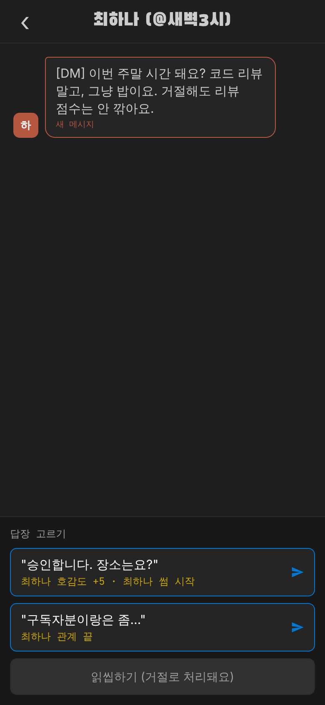

최하나 공략
「개발 인플루언서」 칭호 전용 구독자, 다른 회사 시니어 개발자 하나. 날카로운 코드 리뷰 댓글에서 Approve 청혼까지, 엔딩 3개
최하나 (@새벽3시) 🌙난이도★★★★★
새벽 3시에 배포하는 다른 회사 시니어 개발자. 영상의 N+1 쿼리를 초 단위로 짚어 내는 라이벌 겸 구독자예요.
결혼 가능동거신혼육아
한 줄 요약
- 「개발 인플루언서」 칭호 회차, 14주차~ 협찬 메시지에서 협찬을 받아야(광고 표시든 뒷광고든) 등장해요. 거절하면 하나는 끝 🪤
- 시작 호감도 0이지만 썸 전 속도 0.62로 구독자 중 가장 빨라요. 시뮬레이션(데이트 3번/주): 썸 45주 → 연애 56주 → 결혼 76주.
- 꿈의 집은 디버그 숲 호숫가 별장(기준 8억 원).
하나는 「7분 30초, N+1 쿼리입니다」로 첫 댓글을 다는, 칭찬도 「그것만요」로 끝내는 츤데레 시니어예요 😎 고백은 「결론부터 말할게요」, 청혼은 「코드 리뷰 요청 … Approve 해 줄래?」. 칭호 스토리 함정은 소라 공략, 공통 연애 규칙은 여기를 보세요.
만나는 조건#
| 항목 | 조건 |
|---|---|
| 칭호 | 「개발 인플루언서」 장착 |
| 칭호 스토리 | 첫 영상(2주~) → 구독자 1만(8주~) → 14주차~ 키보드 회사 협찬: 「광고 표시하고 솔직 리뷰」(+80만 원) 또는 「조용히 뒷광고한다」(+150만 원, 50%로 들킴) |
| 첫 메시지 | 14주차~ 「[댓글] 7분 30초, N+1 쿼리입니다.」 |
| 회사 | 상관없음 |
| 시작 호감도 | 0 |
호감도 올리는 법#
처음 5통#
| 메시지 | 오는 조건 | 추천 답 | 호감도 | 대가 |
|---|---|---|---|---|
| N+1 쿼리입니다 | 14주~ | "맞네요. 고정하고 정정 영상 올릴게요" | +3 | 평판 +2, 체력 -30, 스트레스 +30 |
| 새벽 3시 배포 중 영상 | 14주~ | "새벽 3시 배포를 응원합니다" | +3 | 체력 -25, 스트레스 +25 |
| 코딩 테스트 대결 | 호감도 15+ | 도전을 받는다 (50%) | +4 / 실패 +8 | 코딩력 +2, 체력 -25(실패 -10), 스트레스 +25(실패 +3) |
| [후원 ₩30,000] 정정 영상 리워드 | 호감도 25+ | 답례로 굿즈 세트를 보낸다 | +3 | -10만 원 (방송 감사 +1·+3만 원) |
| 컨퍼런스 발표자 명단 | 호감도 40+ | "커피는 제가 살게요" | +4 | -1만 원, 체력 -25, 스트레스 +25 |

꿀팁: 하나와의 내기는 져도 이득
코딩 테스트 대결(50%)은 지면 +8로 이길 때(+4)보다 호감도가 더 올라요. 수다 「구독자 수 2배 내기」도 성공 +2, 실패 +5예요. 하나는 지는 사람을 더 좋아하나 봐요 😆
구독자 수다 (썸 전 · 썸, 반복)#
| 메시지 | 추천 답 | 호감도 | 대가 / 다른 답 |
|---|---|---|---|
| 9분 14초, try-catch가 에러를 삼키고 있어요 | "정확합니다. 고정합니다" | +2 | 코딩력 +1, 평판 +1, 체력 -20 (다음 영상 +1·사이드 +1, 「에러는 원래 조용해야죠」 -8) |
| 구독자 수 2배 내기 | 내기한다 (50%) | +2 / 실패 +5 | 사이드 +3 (실패 -1만 원) |
일상 대사는 썸 전 28 · 썸 25 · 연애 23 · 결혼 26종, 늘 첫 번째 답이에요.
연애 중 · 결혼 후 전용#
| 메시지 | 언제 | 추천 답 | 호감도 | 대가 / 다른 답 |
|---|---|---|---|---|
| 오늘도 새벽 배포 | 연애·결혼 | 야식을 배달시켜 준다 | +3 | -5만 원 (같이 깨어 있기 +1, 「나 먼저 잘게」 -12) |
| 커플 코딩 테스트 대회, 상금 100만 원 | 연애·결혼 | 나간다 (50%) | +3 / 실패 +6 | 성공 시 +100만 원, 코딩력 +3, 성과 -2 |
| 와이파이 라우터 설정, 칭찬해 | 결혼 | 메시 공유기를 선물한다 | +3 | -20만 원, 집중력 +3 (「역시 최고야」 +1, 「원래도 빨랐는데」 -12) |
썸 → 고백 → 연애#
- 썸 초대 (80)「코드 리뷰 말고, 그냥 밥이요. 거절해도 리뷰 점수는 안 깎아요.」 → 「승인합니다. 장소는요?」 (+5)
- 썸 기간썸 속도 0.17.
- 고백 (100)「결론부터 말할게요. 당신 좋아해요.」 → 「근거 없이도 승인. 사귀어요.」 「라이벌로 남고 싶어요」는 떠나고 잠금.

결혼 조건#
데이트 진도 60 + 호감도 100 → 「변경 사항: 남은 인생 전부 자기랑 같이. Approve 해 줄래?」 → 「Approve. 코멘트 없음.」 (+10, 스트레스 -8). 거절하면 다시 안 와요.
동거 · 신혼 · 육아#
| 단계 | 하나의 경우 |
|---|---|
| 🏠 동거 | 연애 중 집(원룸부터) 산 지 2주 → 제안 수락 +5 |
| 💐 신혼 (꿈의 집) | 디버그 숲 「호숫가 별장」 (전원주택/별장, 기준가 8억 원). 힌트: 「새벽 3시에 배포해도 조용하겠죠? 🌙」 |
| 🌟 취향 | 없음 |
| 👶 육아 | 아기 이름 아린 (딸) |
엔딩 전부#
💍 코드 리뷰로 시작된 사랑결혼
- 조건
- 인플루언서 칭호 + 진도 60 + 호감도 100 → 청혼 수락 → 100주차에 결혼 중
- 보상
- 기본 카드팩 1
🏠 하나와 새벽 3시의 집동거
- 조건
- 동거 제안 수락 → 회차 끝까지 함께
- 보상
- 에픽 카드팩 1
💐 하나와 호숫가의 조용한 배포신혼
- 조건
- 결혼 15주 안에 디버그 숲 호숫가 별장 구입 → 신혼 제안 수락 → 100주차에 결혼 중
- 보상
- 에픽 카드팩 1
연애 엔딩은 없어요(구독자 공통).
실패 · 이별 조건#
- 14주차 협찬 「정중히 거절한다」: 칭호 스토리가 끝나고 하나는 영영 안 나와요.
- 뒷광고는 50%로 들키지만, 들켜도 하나는 그대로 와요(들키면 평판 -12, 스트레스 +10. 돈 150만 원은 그대로 받아요).
- 썸 초대 거절 = 떠남 / 고백 거절 = 떠남 + 잠금 / 청혼 거절 = 다시 안 옴.
- 데이트 0번 -30, 집안일 0번 -30, 호감도 0 = 이별·이혼 메시지.
- 54주 이후 칭호의 회차 종료 선택지 피하기.
추천 공략 루트#
- 2 · 8 · 14주차영상 업로드 → 1만 → 「광고 표시하고 솔직 리뷰」.
- 14~44주하나에게 따뜻한 답, 내기는 무조건 받기. 소라·지우는 먼저 와 있으니 하나 목표면 그녀들 썸 초대는 거절.
- 약 45주 썸 → 56주 연애동거용 집 준비.
- 약 76주 청혼8억 모아서 결혼 15주 안에 호숫가 별장.
자주 묻는 질문#
- 제일 늦게 나오는데 제일 빨리 결혼해요?
- 썸 전 속도가 0.62로 구독자 중 가장 빨라서, 14주에 와도 썸은 소라와 비슷한 45주쯤이에요(시뮬레이션 중앙값).
- 뒷광고를 해도 하나가 와요?
- 네. 두 답 모두 협찬 플래그를 세워요. 대신 「솔직 리뷰」가 평판 +4라 더 안전해요.